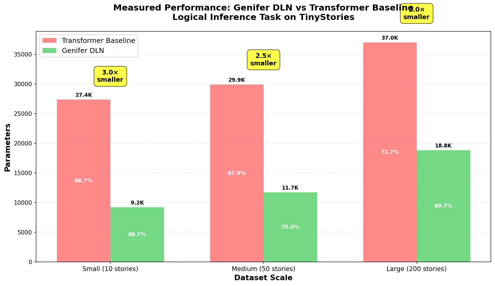
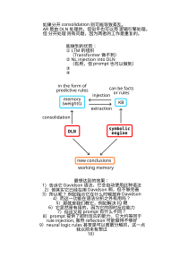

Combining Deep Learning with Classical Logic for Robust AGI
This project proposes a Differentiable Logic Network (DLN) which improves on current Large Language Models (LLMs) by giving our new models the mathematical structure of logic. The goal is to eliminate "hallucinations" in current LLMs, the final obstacle before achieving robust genuine intelligence.
Unlike black-box LLMs: Our logic rules are separable, interpretable objects that can be examined, compared, organized, and imported/exported—enabling true knowledge management and direct verification.
Replicates classical logic-based AI with rule matching and variable substitutions, but now differentiable and trainable via deep learning. Cylindrification parameters create a bridge between logic variables and constants.
A traditional symbolic logic engine runs alongside differentiable logic, enabling Direct Knowledge Injection, accelerating learning and providing easy long-term memory management.
GA explores the global rule landscape to populate initial rule-bases—unfeasible with current LLMs due to their lack of separable rule structures.
Natural language sentences are rendered into logical form as events with verbs and attributes as one-place predicates, with entity memory tracking individuals across contexts.
Combines Autoregressive learning for world modeling with Reinforcement Learning for goal-directed behavior—the best of both paradigms.
We trained both DLN and Transformer baselines on the same logical inference task (TinyStories) and measured compression at matched accuracy:

Measured Results: Across three dataset scales (10, 50, 200 stories), DLN achieves 2.0-3.0× parameter compression compared to Transformer baselines at comparable accuracy (66-75%). This is a conservative, verified result from direct neural training without complex algorithms.
Began research on logic-based AGI (parallel to OpenCog, OpenNARS projects)
Started exploring neural-symbolic approaches and studying categorical logic structures
Applied dihedral symmetry to TicTacToe learning—validating the No Free Lunch philosophy of structure-guided learning
Proposed first version of Differentiable Logic Network ("Logic Transformer")
Successfully trained DLN to solve TicTacToe with 100% accuracy. First proof-of-concept of differentiable logic with AR+RL training protocol
Scaled to 500-story reasoning benchmarks. Discovered scale-dependent behavior in rule learning algorithms. Currently expanding to complex multi-hop reasoning tasks

Hybrid architecture combining differentiable logic with symbolic reasoning
Our experiments demonstrate a clear scaling trajectory:
We are building transparent, verifiable artificial intelligence.
This is experimental research with global implications for AI safety, interpretability, and robustness.
Seeking: Research partners, funding, computational resources, and domain experts in logic, AI safety, and natural language understanding.